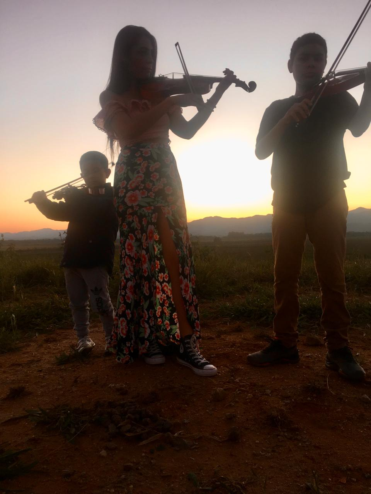
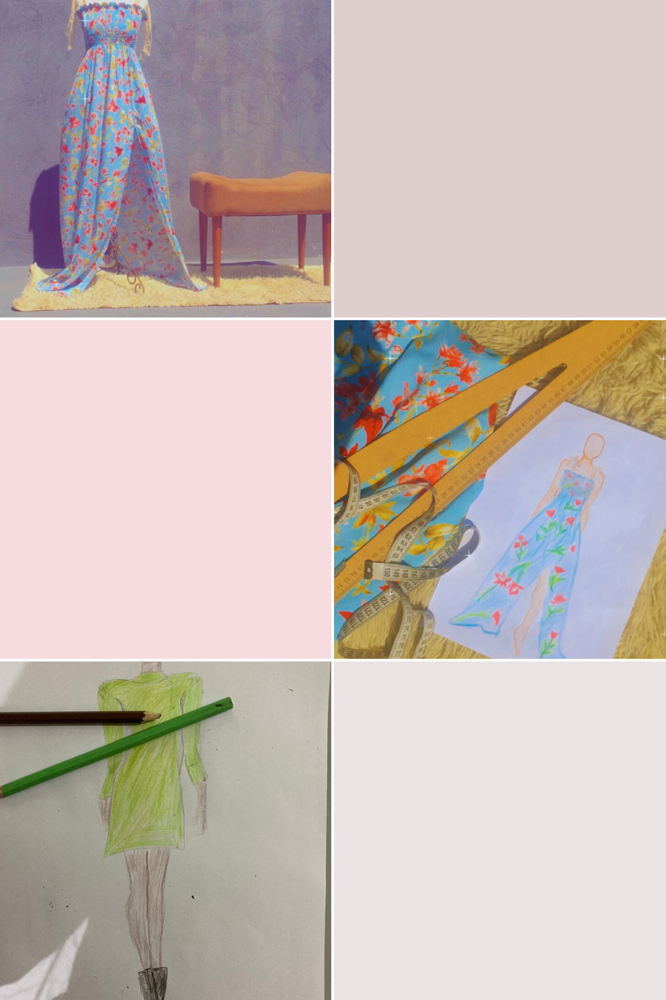
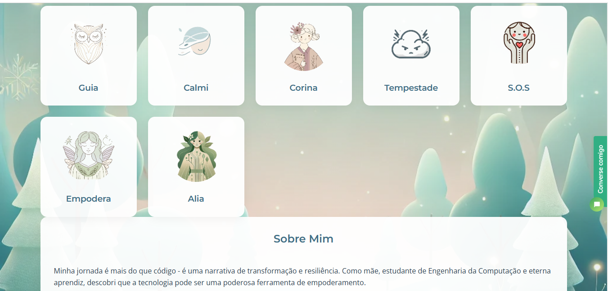

Engenharia da Computação | Recursos Humanos | Embraer | Tecnologia
Anos dedicados à família, construindo base sólida de amor e apoio
Transição corajosa para Engenharia da Computação, quebrando barreiras pessoais
Início em fevereiro de 2025, com foco em aprendizado e aplicação de tecnologia no setor de ERP. Uma oportunidade para crescer profissionalmente em uma empresa reconhecida pela inovação no setor aeroespacial.
Engenharia da Computação
Recursos Humanos
Inspirar outras mulheres a recomeçar, mostrando que não há limites para crescimento e transformação. Minha jornada é prova de que podemos redesenhar nossa história a qualquer momento.
Olá, eu sou Ana Carolina Dias, ou simplesmente Carol. Minha jornada é marcada por escolhas que mudaram a minha vida de formas que nunca imaginei. Durante anos, fui mãe em tempo integral, dedicada a meus filhos e à construção de uma base sólida de amor e apoio para nossa família. Esse período foi de intensos aprendizados, mas também de um silêncio profissional, onde o mundo corporativo ficou para trás. Eu escolhi ser mãe de corpo e alma, e foi nesse tempo que aprendi o verdadeiro significado de resiliência. Mas, como todo ciclo na vida, chegou o momento de voltar a seguir meus próprios sonhos. Voltar à carreira foi um desafio imenso. Eu estava longe do mercado de trabalho, com uma formação em Recursos Humanos que parecia distante de tudo o que havia mudado. Mas algo dentro de mim gritava: "Você ainda tem muito a oferecer ao mundo". E foi assim que dei o primeiro passo na Engenharia da Computação, uma área que sempre me fascinou, mas que eu nunca tive a chance de explorar até aquele momento. Essa transição não foi fácil, mas foi, sem dúvida, uma das decisões mais corajosas que tomei. Cada dia, cada desafio me trouxe um aprendizado novo. Hoje, tenho o orgulho de dizer que sou uma mulher que quebrou barreiras, não apenas profissionais, mas pessoais. Meu retorno ao mercado de trabalho é um reflexo da minha força interna e do meu desejo imenso de mostrar a outras mulheres que, mesmo após anos de pausa, é possível recomeçar e alcançar os seus sonhos. Minha história é feita de escolhas, de amor e de uma constante busca por crescimento. E o melhor, ainda está por vir.
Ser aprovada no processo seletivo da Gupy, entre muitos candidatos, foi um dos momentos mais marcantes da minha trajetória. Após anos me dedicando à maternidade, essa conquista representa não apenas o início de um novo capítulo, mas também o resultado de muita força de vontade e resiliência. Começo meu estágio na Embraer em fevereiro de 2025, no setor de ERP, com o sonho de continuar crescendo em uma das maiores empresas de tecnologia e aviação do mundo.
O violino entrou na minha vida na adolescência como uma conexão profunda com a música. Durante a pandemia, transformei este talento em um momento precioso de união familiar, ensinando meus filhos a tocar. Cada nota é uma memória, cada melodia uma história de amor.
Aprendi a costurar sozinha, desafiando expectativas e descobrindo um talento inesperado. Hoje, criar minhas próprias roupas é mais do que um hobby - é uma expressão de liberdade, criatividade e autodescoberta
Um refúgio digital onde tecnologia e empatia se encontram para transformar vidas. Este projeto nasceu do desejo de criar um espaço acolhedor e seguro para mulheres, inspirado pela minha própria jornada de superação e crescimento. A Floresta da Calma é mais do que um site: é uma iniciativa que busca fortalecer, apoiar e empoderar mulheres, ajudando-as a encontrar equilíbrio emocional, desenvolver habilidades e conquistar sua independência. Criado com dedicação e amor, o projeto oferece: - Personagens acolhedores e recursos práticos, como exercícios de respiração, histórias de superação e ferramentas para controle emocional. - Uma ponte para o mercado de trabalho, com dicas para melhorar currículos e utilizar a tecnologia como aliada no processo de recolocação profissional. Eu fiz este projeto pensando em mulheres que, assim como eu, enfrentam desafios, mas não desistem de construir algo melhor. Quero que elas saibam que não estão sozinhas, que podem encontrar apoio e que têm a força para alcançar tudo o que sonham. A Floresta da Calma é minha maneira de dizer: "Você é capaz e merece todo o sucesso e felicidade do mundo!"
Visite o site da Floresta da Calma
Esse projeto é uma prova de que a tecnologia pode ser uma aliada poderosa quando guiada pelo coração. 💚
Acredito que a verdadeira inovação nasce da intersecção entre tecnologia, criatividade e compaixão. Cada desafio é uma oportunidade, cada erro um aprendizado, e cada sonho uma possibilidade de transformação.